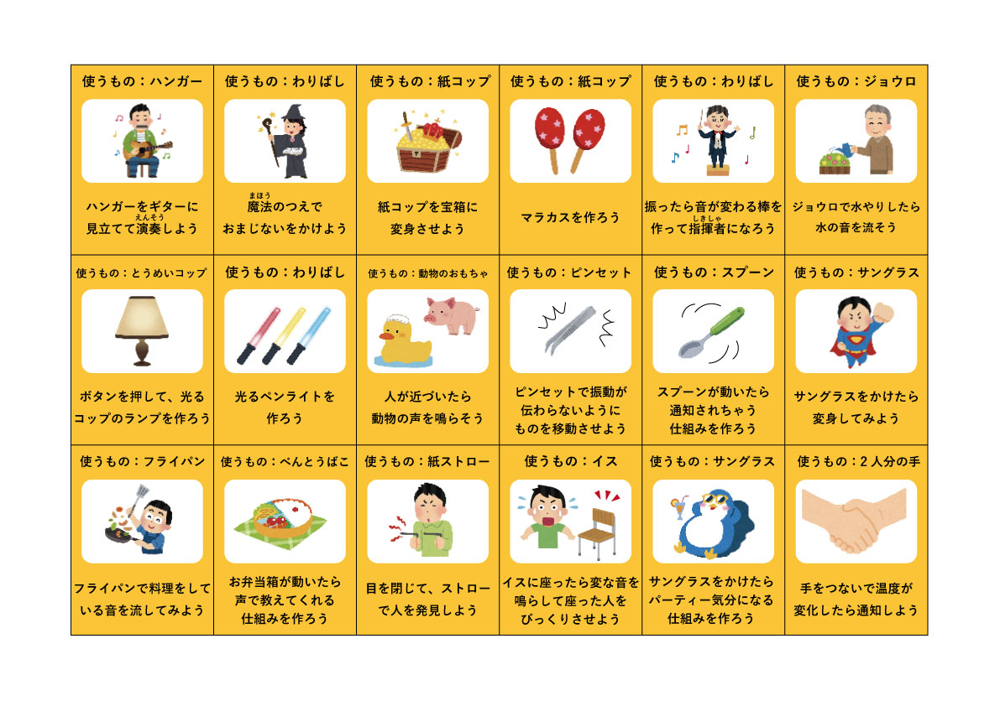
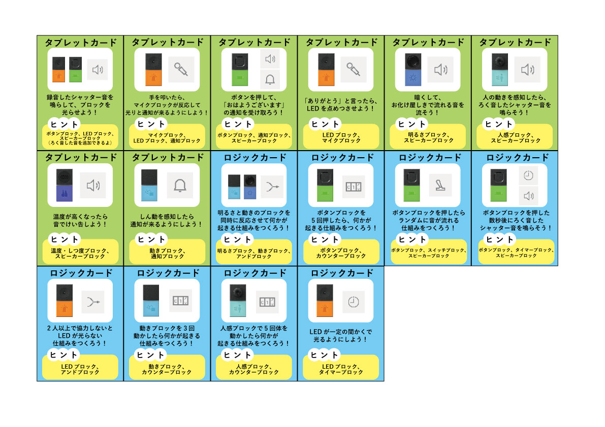
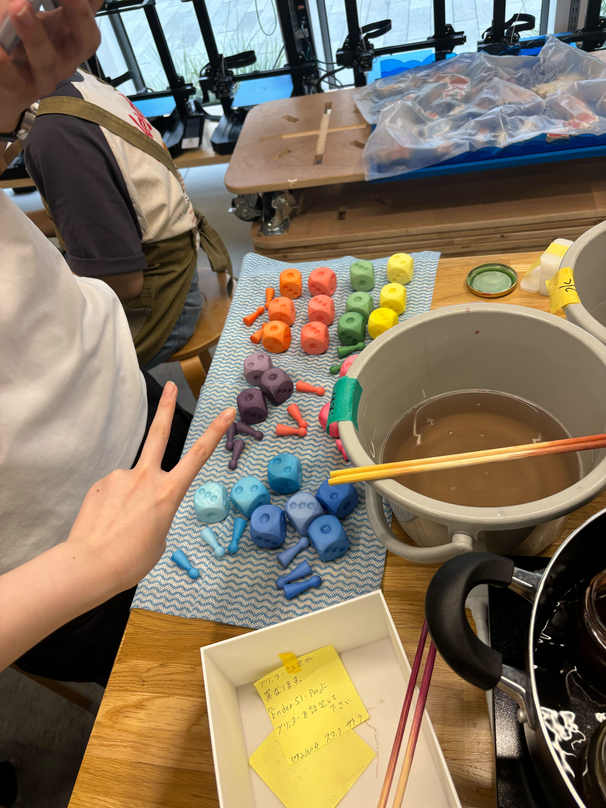

SONY×横浜市×道用ゼミプロジェクト
★WSの準備
トライアルWSを受けて新しいWSを考えることになった。
WSの内容は内容は
1.MESHの使い方を学ぶ『基礎』
2.MESHの応用編、MESHと身近なものと組み合わせる練習『活用』
3.遊びの天才になる（遊びの開発をする）『天才』
の３つの段階に分かれる
そのため各段階の担当に分かれ、それぞれの内容を考えていった。
私は2の活用のグループに入った。
活用の段階では、ものカード・タブレットカード・ロジックカードの内容を考えた。
なかなか考えるのは難しく、週3くらいのペースでMTGを続けた。
SONYの方やフロンテッジの方たちに相談したり、アドバイスをもらいつつなんとか完成していった。
横浜市の城内さんはわざわざ仕事終わりに大学まで来てくださり、ものカードの実験に参加してくださった（感謝）
最終的に完パケが7月8日のため、ギリギリで作って修正などはお任せする形になった。
なんとかみんなで作ったものたち


今回イラストレーターでこれらのデータ作りをしたが声をかけるとみんな手伝ってくれた。
感謝です！！！！ありがとう！！！
他にも準備としてスライドや、サイコロなど作っていった。
サイコロは3Dプリンターで網倉が出力→色付けは有志でやってくれた。
